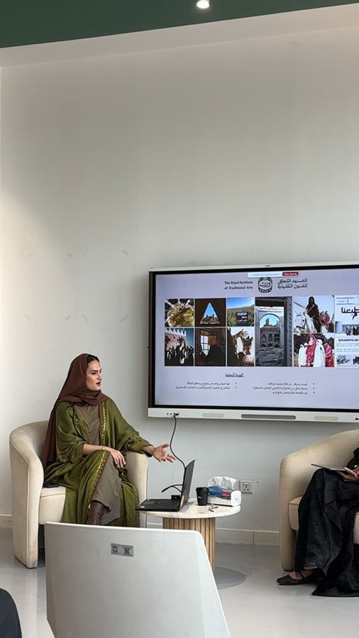
من الفكرة إلى قطعة الأثاث
الأربعاء 11 نوفمبر 2026 · المعهد · ساعة
لقاء مع المصممة نورة سليمان عن رحلة القطعة من الرسمة الأولى إلى التنفيذ: الذوق، الصناعة، التسعير، والمتاحف كمصدر إلهام. خمسة محاور وأسئلة مفتوحة من الطلاب.
نادٍ طلابي يقرّب طلاب المعهد من الممارسين: جلسات حوارية، زيارات لاستوديوهات ومتاحف، لقاءات مع خبراء، ومساهمة في تنظيم فعاليات مجتمع ورث. كل ما هنا نفّذه طلاب، بلا ميزانية، وبدعم تنسيقي من شؤون الطلاب.
كل تفعيل مستقل، يكتمل في يوم واحد، ويُوثَّق بصوره. اختر تصنيفًا أو تصفّح الكل من الأحدث.

لقاء مع المصممة نورة سليمان عن رحلة القطعة من الرسمة الأولى إلى التنفيذ: الذوق، الصناعة، التسعير، والمتاحف كمصدر إلهام. خمسة محاور وأسئلة مفتوحة من الطلاب.
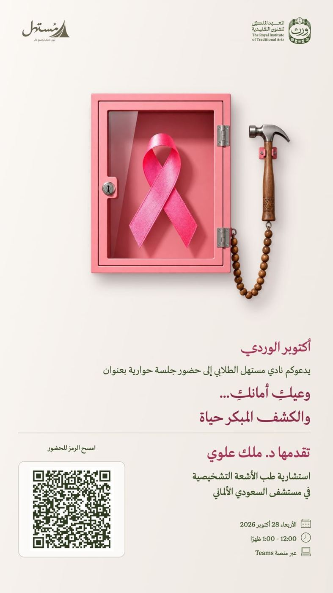
جلسة حوارية بمناسبة أكتوبر الوردي مع د. ملك علوي، استشارية طب الأشعة التشخيصية في مستشفى السعودي الألماني، عن الكشف المبكر وصحة الثدي.

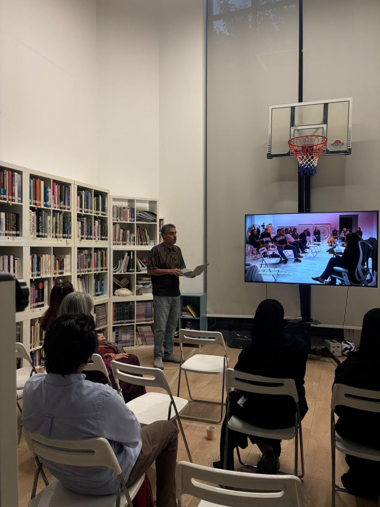
جلسة في مكتبة الاستوديو مع الفنان غانم عن ممارسته وتجاربه بين المعارض والورش، من معرض «The Great Michelangelo Is Dead» إلى ورشة التصوير «Lens of Equality»، وحوار مفتوح مع الطلاب.
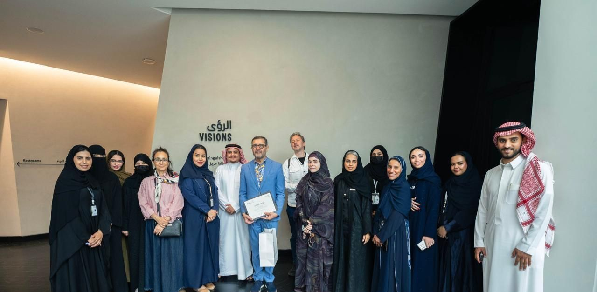
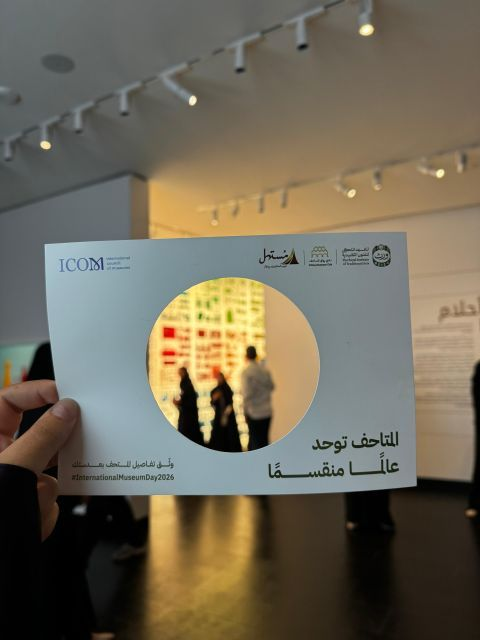
تفعيل لليوم العالمي للمتاحف بالتعاون مع نادي رواق المتاحف: جولة في المتحف وحوار مع مديره جاك برسكيان عن المتحف كمكان حيّ للتبادل الثقافي، يربط الدراسة الأكاديمية بالتجربة داخل المؤسسات الثقافية.

صورة الفريق في ختام أول فصل دراسي كامل للنادي.
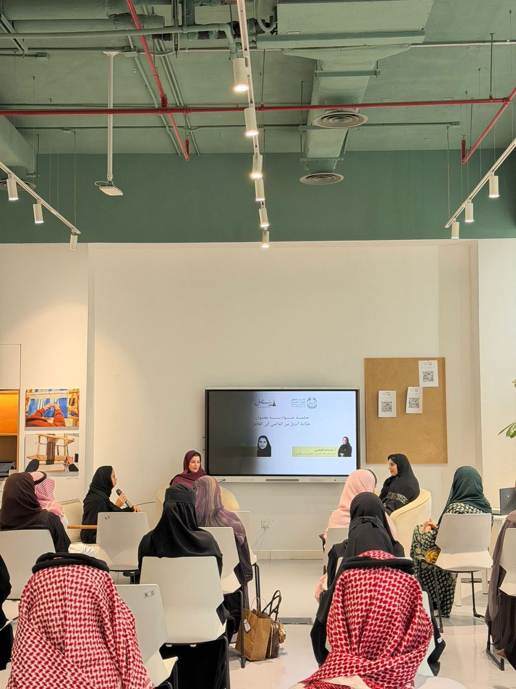
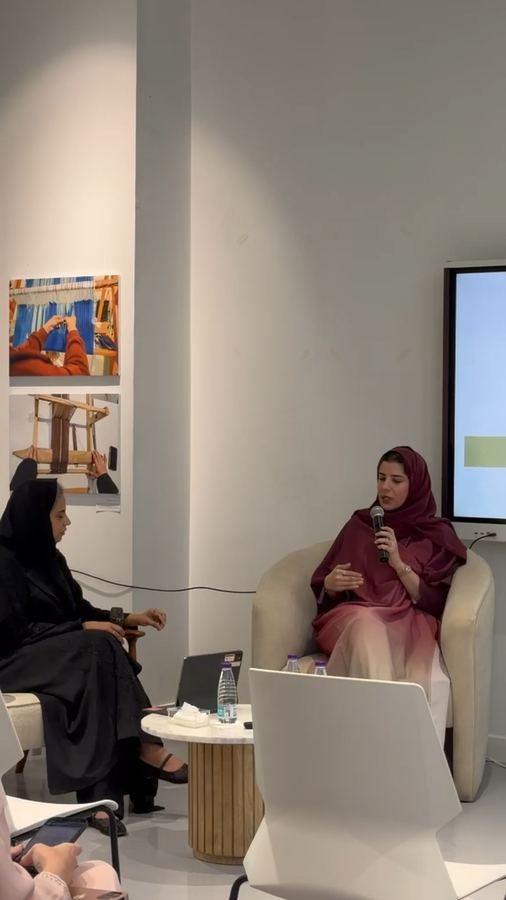
لقاء حواري مفتوح مع ضيفة في قاعة المعهد، بأسئلة الطلاب وتسجيل بالحضور عبر رمز QR.
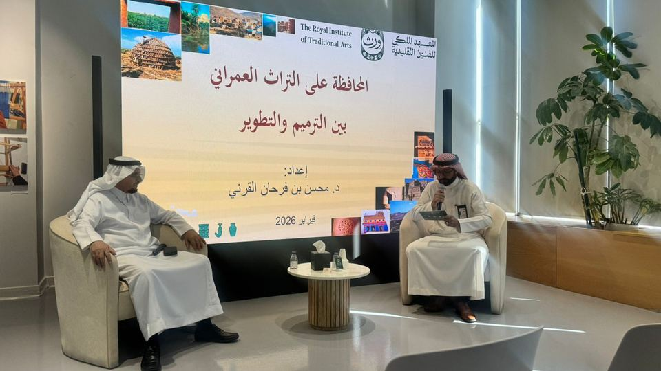
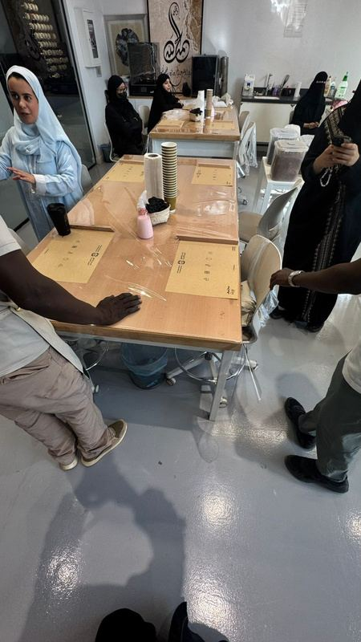
تعاون مع مجتمع ورث في تنظيم فعاليات شهر فبراير: وفّر النادي فريق التنظيم والإشراف على الحضور، ومنها محاضرة «المحافظة على التراث العمراني بين الترميم والتطوير».
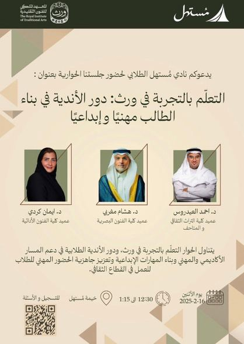
جلسة أعدّها النادي ضمن موسم الأندية الطلابية، واستضاف فيها عمداء كليات المعهد، مع نشاط تفاعلي لاختبار المعرفة الثقافية للحضور وهدايا رمزية.
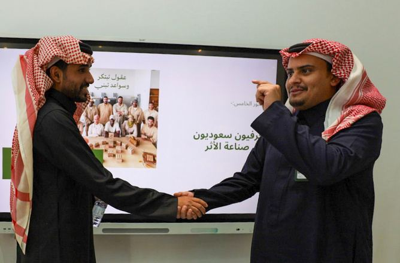
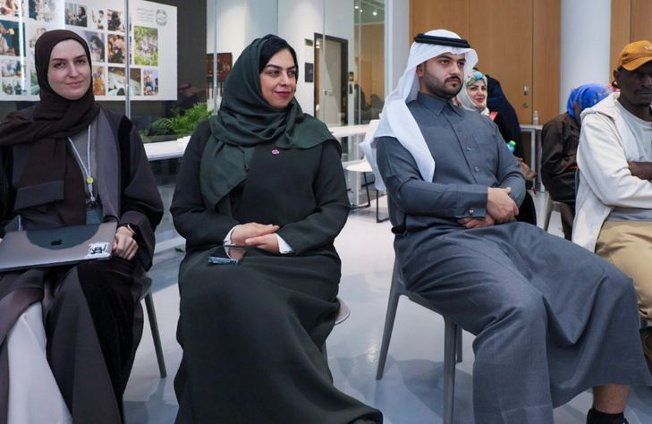
جلسة أعدّها الخريج فيصل الجارالله والطالب حماد الشمري عن برنامج البناء بالطين، أدارها عضو النادي محمد آل عطفة وأعدّ محاورها، بحضور الطلاب وأعضاء هيئة التدريس.

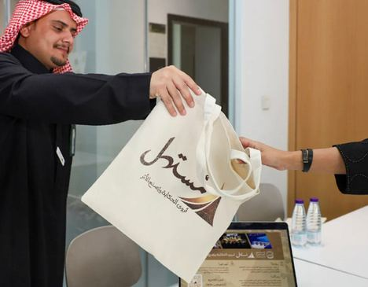
انطلق النادي في يوم إطلاق الأندية الطلابية بإشراف شؤون الطلاب وبحضور قيادات المعهد. عرّفنا بالنادي واستقطبنا أعضاء من مختلف الكليات والبرامج.
ثلاثة تفعيلات قيد التنسيق لنوفمبر وديسمبر 2026، التنظيم كاملًا على النادي.
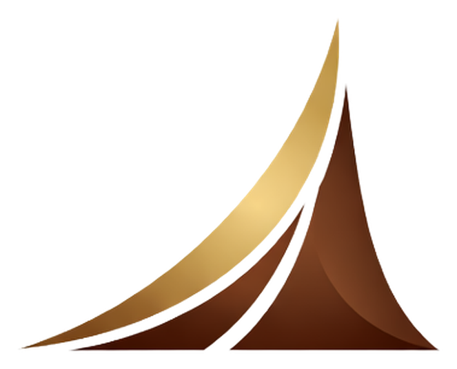
حوار مع الفنان والمصور معاذ العوفي حول معرضه ودور الفنان في ظل الظروف الراهنة، بأسئلة مباشرة من الطلاب.
بمناسبة يوم السينما العالمي، جلسة مع نادي سينيراما: كيف تتحول الفكرة إلى فيلم وتُقدَّم عبر Pitch Deck، مع تطبيق على مشاريع طلابنا تمهيدًا لسدوس.
روان، عضوة النادي، تعرض أعمالها. نعلن معرضها لطلاب المعهد ونلتقيها في مقره لتنقل تجربتها من الفكرة الأولى إلى صالة العرض.
تفعيل واحد كل شهر، بفائدة تستحق وقت الطالب، ونقل الخبرة لفريق جديد قبل تخرج المؤسسين نهاية 2027.
روزنامة بتفعيل شهري مستقل، يكتمل في يوم واحد، ويُعلن قبل بداية الفصل.
مهارة، أو تجربة ممارس، أو فرصة للتعرف على القطاع الثقافي من الداخل.
نقاط حضور للطلاب ونقاط أفكار للأعضاء، ومزايا معلنة بالتنسيق مع شؤون الطلاب.
طالب يعلّم طالبًا، ومعارض الأعضاء، ومشاريعهم أمام ممارسين.
تعاون واضح مع شؤون الطلاب ومجتمع ورث في فعاليات المعهد وخدماته.
قوالب وملفات تسليم وفريق جديد يقود قبل نهاية 2027.